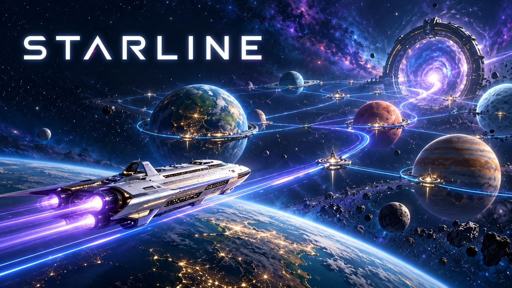

作品概要
銀河交通会社の運営者として、24惑星に航路を広げ、船団を育てていきます。
STARLINEは、惑星ごとの待機客と行き先を見ながら航路を設け、旅客船を配備して交通網を広げる運営シミュレーションです。輸送による収益を再投資し、船の整備やイベントへの対応を重ねながら、4地域・24惑星へネットワークを拡大します。
ゲーム / 銀河交通シミュレーション
惑星間の需要を読み、航路と船団を整えて銀河交通網を築くブラウザ運営シミュレーション。
銀河交通会社の運営者として、24惑星に航路を広げ、船団を育てていきます。

Quick Look
銀河交通会社の運営者として、24惑星に航路を広げ、船団を育てていきます。
STARLINEは、惑星ごとの待機客と行き先を見ながら航路を設け、旅客船を配備して交通網を広げる運営シミュレーションです。輸送による収益を再投資し、船の整備やイベントへの対応を重ねながら、4地域・24惑星へネットワークを拡大します。
鉄道や航空会社を運営するような交通シミュレーションを、そのまま銀河規模でやったら面白いのではないか、という発想から始まりました。企画段階では、交通ゲームの基本となる「需要を見て、路線を作り、輸送能力を調整する」構造に、ワープや宇宙人、宇宙のトラブルといった要素を組み合わせる構想を描きました。
STARLINEで重視しているのは、トラブルそのものを主役にしすぎず、交通ネットワークへ連鎖する問題として扱うことです。船が遅れ、惑星に待機客が増え、別航路まで混雑し、そこへ船を移すと移動元の路線が混み始める。小さな事件が銀河交通網全体へ波及することを、交通シミュレーションの面白さとして設計します。
惑星を選んで待機客と行き先を確認し、「新航路」で惑星を結びます。「艦隊」で船を購入して航路へ配備すると、旅客を輸送しながら収益を得られます。
経由航路では3惑星以上を順に選び、隣り合う惑星間に独立した往復航路を作成します。各区間に船を配備し、需要や航続距離に合わせて運航を調整しましょう。
短距離向けのSHUTTLE、旅客船LINER、長距離向けのLONGHAULER、大量輸送向けのARKから、航路の距離や需要に合う船を選べます。
WARP DRIVEや防護・快適性などのアップグレードで船を調整し、損耗した船は運航から外して修理できます。惑星ごとに異なる種族別の需要や、需要変動・危険宙域のイベントにも対応します。
待機時間の長い客が増えると顧客満足度が低下し、マイナス20に達するとゲームオーバーです。新たに解禁した惑星では、航路を設定するまで待機客は発生しません。
運航中の船があり、長く待つ客が少ない状態では満足度が少しずつ回復します。待機客が多い区間に船を配備し、混雑を抑えましょう。
全24惑星を解禁し、顧客満足度80以上を達成するとゲームクリアです。クリア後も会社運営を続けられます。
STARLINE GATEは交通網の発展後に挑戦できる大型プロジェクトです。条件を満たし、部品の輸送と建設、最終輸送テストを進めます。Gateの完成はキャンペーンのクリア条件とは別です。
画面下のドックから惑星、航路、艦隊、ゲートを開いて操作します。進行状況はブラウザに5秒ごとに自動保存され、設定から手動チェックポイントの保存・復元もできます。
セーブは別端末へ自動では同期されず、ブラウザのデータ消去により失われることがあります。
ブラウザでプレイできます。24惑星の交通網を運営し、クリア後も会社経営を続けられます。
STARLINEの面白いところは、交通シミュレーションとしての土台がかなり分かりやすいところです。どこに人が溜まっているのかを見る。そこへ航路を作る。船を走らせる。それでも足りなければ増便する。ここまでは、とても真面目な交通ゲームです。問題は、その船に乗っているのが宇宙人だということです。相性の悪い宇宙人同士が揉めて船が遅れ、惑星に客が溜まり、慌てて別路線から船を持ってくると今度はそちらが混む。一方で、ワープドライブを積めば遠距離路線を一気に短縮できるかもしれない。STARLINEは交通ゲームを宇宙風の見た目にしただけではなく、宇宙という舞台だからこそ交通の問題も解決方法もおかしくなる作品です。星と星を一本ずつ線で結び、銀河に巨大な交通網を作っていきます。